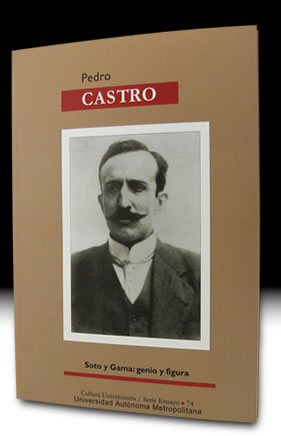

- Inicio
- Publicaciones
- Álvaro Obregón fuego y cenizas de la Revolución Mexicana
- Adolfo de la Huerta El desconocido de Roberto Guzmán Esparza
- A la Sombra de un Caudillovida y muerte del general Francisco R. Serrano
- Soto y Gamagenio y figura
- Adolfo de la Huerta Serie Grandes Protagonistas de la Historia Mexicana
- Historia del Agrarismo en México
- Ciudad Cuauhtémoc, Chihuahuacrónica de su fundación
- Adolfo de la Huerta: la integridad como arma de la revolución
- Adolfo de la Huerta y la Revolución Mexicana
- Fronteras Abiertasgeopolítica y expansionismo en Brasil contemporáneo
- Currículum

ISBN: 968-5958-08-4
Editorial: Universidad Autónoma Metropolitana. Cultura Universitaria/ Serie Ensayo 74. 2002, 171 pp., fotos, ilustraciones
Soto y Gama:
genio y figura
Luz y sombra de la fuerza y la debilidad humana en política, Soto y Gama, “revolucionario”, “anarquista”, “zapatista”, “agrarista”, “anticomunista”, “almazanista”, “reaccionario”, “fanático”, por mencionar los motes más coloridos que se le pusieron, cargó a lo largo de su existencia con una pulsión irrefrenable, que fue la de cambiar al mundo. Sus ideas vibraron a través de innumerables artículos en El Universal y en sus libros La rebelión del sur y Emilio Zapata, su caudillo (edición de autor, 1960), Otro holocausto (Jus, 1980) y la Historia del Agrarismo en México, 2002) Pocos como Soto y Gama se vieron tan expuestos a la crítica desde las diferentes tendencias políticas, y pocos vivieron en carne propia las privaciones que eran efecto directo de una manera singular de hacer política. Fue un sujeto activo de la historia, un agitador profesional, negado para la quietud burguesa. Fuera del ámbito académico, en el que Soto y Gama es un personaje bien identificado, su perfil se diluía cada vez más con el paso del tiempo. Afirmó que no esperaba recompensas, porque la brújula que le guiaba era el combate a la injusticia, no la gloria, la riqueza o el poder. En su vejez era visto como un augusto personaje quijotesco y un sobreviviente de la época más turbulenta del país en su siglo. Hasta el final, se declaró fiel soldado zapatista y obregonista, y conservó la lucidez retórica, tormentosa y rebelde que le hizo tan famoso en la Revolución. Soto y Gama no tuvo cabida en el sistema priísta, y arremetió cuanto pudo contra su autoritarismo y corrupción. Como es natural, recibió en correspondencia dosis apropiadas de ostracismo, indiferencia, descrédito, y cuando estaba cercana su muerte, uno que otro homenaje, pero pronto fue olvidado. Este libro cumple con la tarea de hacerlo presente en nuestro tiempo.
Réplicas y consultas con el autor: pedrocastro3131@gmail.com
Índice
- ¿Por qué Soto y Gama?
- La búsqueda de un ideal
- Una fe zapatista
- Al lado de Obregón
- Ascenso y caída del PNA
- De nuevo en la oposición
- Por caminos escabrosos
- Los árboles mueren de pie
Soto y Gama, Antonio Díaz Soto y Gama, Álvaro Obregón, Plutarco Elías Calles, Adolfo de la Huerta, Reforma Agraria en México, Aurelio Manrique, Constitución de 1917, Leyes Agrarias de México, Jorge Prieto Laurens, Juan Andreu Almazán, Ezequiel Padilla, Lázaro Cárdenas, Miguel Alemán